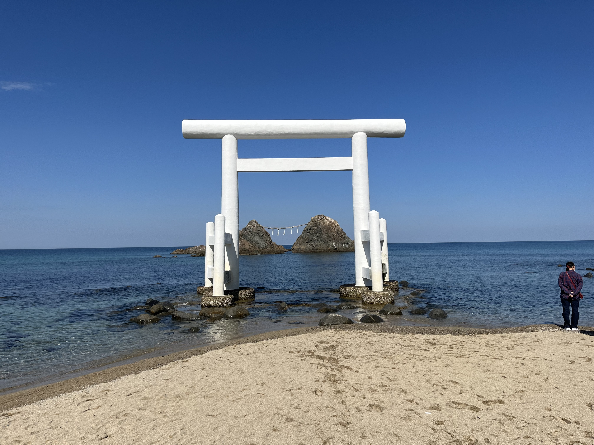

名勝・日本の渚百選
縁結びと夕日の名所
桜井二見ヶ浦（さくらいふたみがうら）は、福岡県糸島市を代表する絶景スポットであり、櫻井神社の宇良宮（うらのみや）として崇められている神聖な場所です。
海中にそびえ立つ真っ白な鳥居と、大注連縄で結ばれたふたつの「夫婦岩」が並ぶ姿は非常に神秘的で、縁結びや夫婦円満のシンボルとして親しまれています。
桜井二見ヶ浦の主な見どころ
白鳥居と夫婦岩
青い海と空に美しく映える純白の鳥居と、約30mの大注連縄で結ばれた男岩・女岩が並び立つシンボルです。
日本の夕日百選の絶景
夏至の時期には夫婦岩の間に夕日が沈む幻想的な光景を見ることができ、多くの写真家や観光客を魅了します。
おしゃれな海岸沿いカフェ
周辺のサンセットロード沿いには海を一望できるカフェやレストランが多く立ち並び、ドライブに最適です。
施設情報
| 所在地 | 福岡県糸島市志摩桜井 |
|---|---|
| 見学時間 | 自由（夕暮れ時や満潮・干潮で異なる表情を楽しめます） |
| 指定等 | 福岡県指定名勝 / 日本の渚百選 / 日本の夕日百選 |
| 拝観料 | 無料（自由散策） |
| アクセス | JR筑前前原駅から昭和バス（野北線）「二見ヶ浦」下車すぐ / 西九州自動車道「前原IC」より車で約25分 |